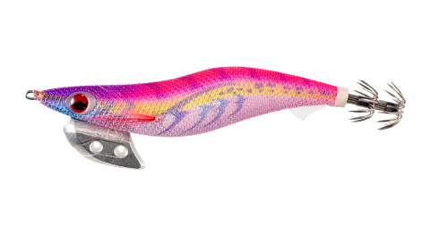
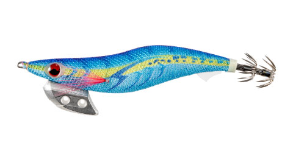
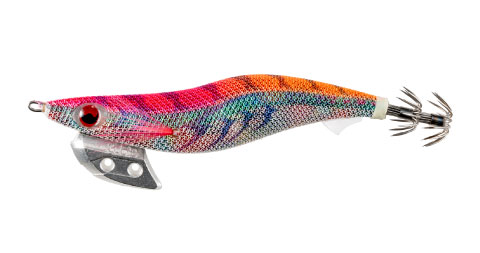
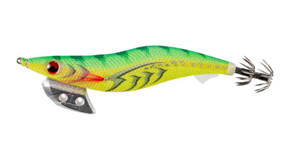

エギ王Kディープ
（ディープタイプエギ）
エギ王Kディープ（EGI-OH K DEEP）はヤマシタ（YAMASHITA）のエギです。
定番「エギ王K」シリーズのディープタイプとして、深場・激流のタフコンディションを打破することに照準を絞った設計。水深10m以上の深場や、横風・潮流でラインが流されやすい状況でもブレないフォールでアピールできるのが最大の魅力です。

画像出典:ヤマシタ公式HP
スペック
- メーカー
- YAMASHITA（ヤマシタ）
- タイプ
- エギ（ディープタイプ）
- サイズ
- 3.0号
- 全長
- 90mm
- 重さ
- 19g
- 沈下速度
- 約2.0秒/m
- ターゲット
- アオリイカ
- 発売
- 2026年9月上旬
▼今すぐチェック
エギ王Kディープの特徴
深場・激流のタフコンディションを打破する、ブレないフォール性能
-
ディープタイプによる速い沈下速度
ベーシックタイプ（約3秒/m）より速い約2.0〜2.5秒/mの沈下速度を実現。水深のある深場でも手返しよくボトムまで届けられる。
-
横風・潮流が強い状況でもブレないフォール
エギ王Kシリーズが持つ「圧倒的な安定性」を継承し、横風や速い潮流でラインが流される状況でも姿勢を乱さずにフォールする。
-
タフコンディション特化の設計
深場・激流という「釣りにくい状況」に照準を絞った設計のため、他のタイプでは手返しが悪くなる状況でも安定してアオリイカを攻略できる。
エギ王Kディープの使い方
基本はシャクリ&フォールの繰り返し。ディープタイプの速い沈下速度を活かし、まずはしっかり底を取ってからボトムから中層をシャクリで探るのが基本の組み立て。
横風や潮流が強い状況では、フォール中にラインスラックが出やすいため、ラインテンションを張りすぎない程度にコントロールしながらアタリを取るのがポイント。深場では着底までのカウントを一定にして、同じレンジを繰り返し探ると反応を拾いやすくなります。
エギ王Kディープの得意な状況
水深10m以上の深場や、横風・潮流でラインが流されやすいタフコンディションが最大の出番。
堤防の先端など潮流の速いポイントや、沖の深場に落ちたアオリイカを狙いたい場面に強い。他のタイプでは底が取りにくいと感じる状況で選びたい1本です。
ワンポイント
潮流が速い場所では、キャスト後すぐにラインを送り込みすぎず、エギの姿勢を保ったまま沈めるとブレが少なくなります。
深場を探る際は、着底後すぐにシャクらず一呼吸置いてテンションフォールを入れると、アタリを弾きにくくなります。
サイズの使い分け
| サイズ | 全長／重さ | 沈下速度 |
|---|---|---|
| 2.5号 | 75mm／13g | 約2.5秒/m |
| 3.0号 | 90mm／19g（本記事のモデル） | 約2.0秒/m |
| 3.5号 | 105mm／25g | 約2.0秒/m |
エギ王Kディープは2.5号〜3.5号の3サイズ展開。号数が上がるほど自重が増し、より深い深場や速い潮流への対応力が上がる。3.0号はその中でも「深場対応力と扱いやすさのバランス」を担う中核サイズだ。
エギ王シリーズの使い分け
| モデル（3.0号） | 全長／自重 | 沈下速度 | 得意な場面 |
|---|---|---|---|
| エギ王K ベーシック | 90mm／16g | 約3.0秒/m | 標準的な水深のポイント・最初に揃える基本の1本 |
| エギ王K シャロー | 90mm／15g | 約6.0秒/m | 藻場や浅場・スローフォールで見せたい場面 |
| エギ王K スーパーシャロー | 90mm／14.5g | 約8.0秒/m | ごく浅いシャロー・スレたイカにじっくり見せたい場面 |
| エギ王K ディープ | 90mm／19g | 約2.0秒/m | 深場・速い潮流・横風が強いタフコンディション（本記事のモデル） |
| エギ王LIVE サーチ | ―／15.5g | 約3.0秒/m | ラトル音と490グローでアピールしたい夜・濁り潮 |
エギ王Kシリーズは同じ3.0号でも、スーパーシャロー（約8.0秒/m）からディープ（約2.0秒/m）まで沈下速度で4タイプを選べる。ボディ形状と操作感はそのままに、水深と潮の速さに合わせてタイプだけ持ち替えられるのがシリーズで揃える強みだ。
エギ王LIVE サーチは別シリーズで、ラトル内蔵と全色490グローが特徴のアピール重視モデル。エギ王Kで反応がないときの「音と光で探る」ローテーション役として組み合わせたい。
オススメカラー
エギ王Kディープは全8色展開。タフコンディションでオススメのカラーを厳選して紹介します。

005 ムラムラチェリーマズメ時や濁り潮に強い高アピールなレッド系カラー。

007 ブルーポーション澄み潮やハイプレッシャー下でも使いやすいナチュラル系カラー。

052 ぶちぶちコーラル深場でも視認性を確保しやすい、柄で魚にアピールするカラー。

099 ライムヘイジーデイゲームでシルエットを出しやすいクリア系のカラー。
画像出典:ヤマシタ公式HP
エギ王Kディープに似ているルアー
-
 エギ政改
DUO
詳細はこちら＞
エギ政改
DUO
詳細はこちら＞
同じ2.5〜3.5号展開のエギ。SHALLOW／NORMALと沈下速度違いのモデルを選べる点で、号数・レンジに応じて使い分けたい1本。